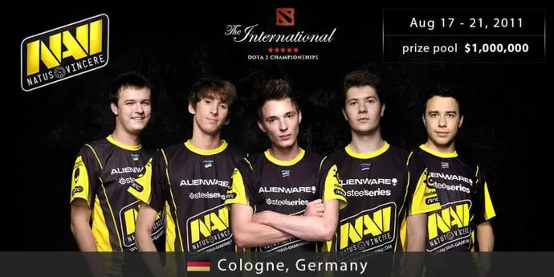
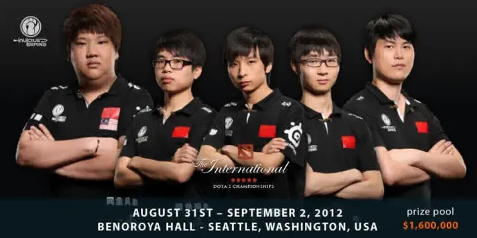
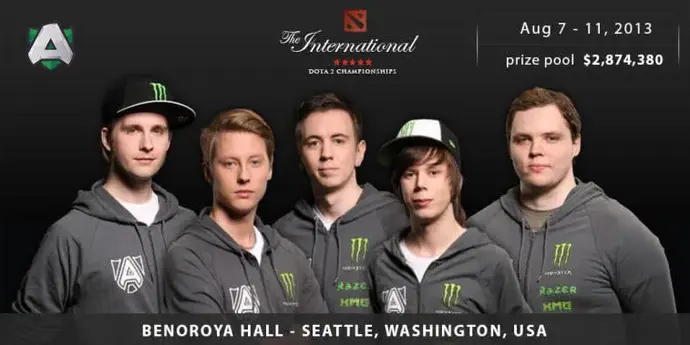
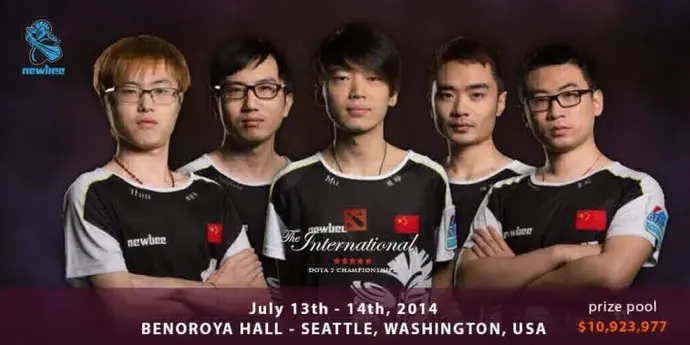
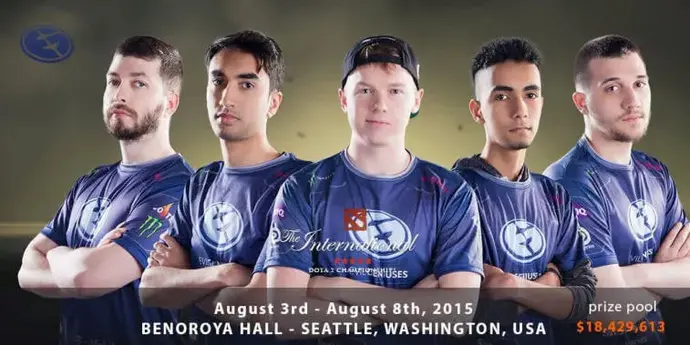
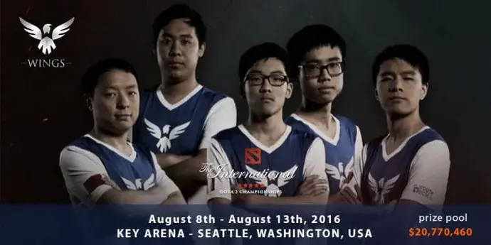
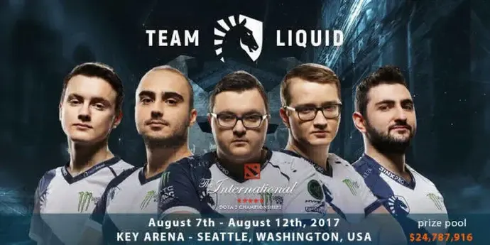
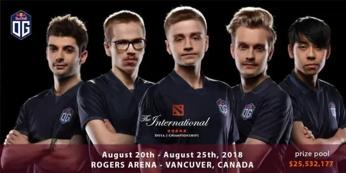
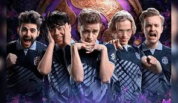
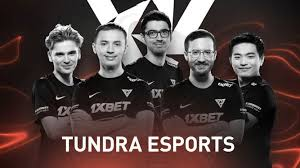

The International es un campeonato anual del videojuego Dota 2 patrocinado por la empresa desarrolladora de juegos Valve Corporation. El campeonato se enmarca dentro de los deportes electrónicos. En este torneo participan actualmente dieciocho equipos profesionales, 12 de ellos ingresando por invitación de Valve según los resultados de la serie de torneos Dota Pro Circuit de esa temporada, y los restantes 6 ingresando mediante calificaciones regionales, un puesto respectivamente para Norteamérica, Sudamérica, el Sudeste Asiático, China, Europa y la CEI. El campeón más reciente de estos esports es Team Spirit.
El torneo comenzó con el lanzamiento de la versión beta de Dota 2 el 17 de agosto de 2011 en la Gamescom, con un pozo total de 1,6 millones de dólares y con un premio final de un millón de dólares. Posteriormente, se ha realizado una edición cada año, llegando a pasar los 34 millones de dólares en la edición de 2019, siendo el mayor premio jamás entregado en la historia de los videojuegos.
Desde la edición de 2013, la mayor parte del premio viene a estar financiado con base en los mismos jugadores y aficionados de Dota 2, ya que el 25% de sus compras en determinados «kits» que van a parar al premio final, con Valve colocando solo los 1.6 millones de dólares del premio base. Los jugadores que aportan comprando el «kit», reciben a cambio ciertas ventajas cosméticas, exclusivas y muy detalladas propias de la edición de The International de ese año, en función del tamaño del premio final, acumulándose a medida que crece. Los ganadores del campeonato reciben el Aegis of Champions en forma de trofeo.
natus vincerre International 2011
El primer torneo se celebró en 2011. Se invitó a la competición a 16 equipos, sin fase de clasificación. En ese momento, el torneo apenas se parecía a las vacaciones de deportes electrónicos que estamos acostumbrados a ver ahora.
El torneo se celebró en la ciudad de Colonia en el estadio Gamescom, con un premio acumulado de 1,6 millones de dólares. Fue una gran cantidad de dinero, ya que el récord de premios en metálico se rompió en ese momento.
Vale la pena señalar que el juego Dota 2 se presentó por primera vez a los jugadores en ese mismo torneo. Los partidos se retransmitieron en directo. Ese torneo lo ganó el legendario equipo ucraniano Natus Vincere con un marcador de 3-1, superando al EHOME en la final.
El torneo también rompió el récord de vistas. Los juegos fueron vistos por más de un millón y medio de espectadores, de los cuales la mayoría fueron representados por fanáticos chinos de los deportes electrónicos. El equipo chino fue considerado un claro favorito, pero las acciones concertadas de los ucranianos pusieron fin a los sueños chinos del campeonato. El equipo ruso M5 perdió ante solo dos equipos, ambos finalistas, y no abandonó el grupo.
invictus gaming International 2012
Este y los siguientes cinco torneos se llevaron a cabo en la ciudad estadounidense de Seattle. Este es el primer torneo independiente de Dota 2 (el anterior se llevó a cabo como parte de una exhibición de eSports. El evento fue organizado por Benaroya Hall. 16 equipos participaron en el torneo. 14 fueron directamente, dos por clasificación. El fondo de premios se mantuvo en la cantidad de 1,6 millones de dólares.
En la final, los equipos ucraniano y chino se volvieron a encontrar, solo sus compatriotas IG ocuparon el lugar de EHOME. NaVi perdió 1-3, sin embargo, mostró una consistencia envidiable, ingresando a los dos mejores equipos por segunda vez consecutiva. Dota 2 fue mejorado para ese torneo, aunque estaba lejos de la versión moderna.
aliance International 2013
Este torneo fue el último despegue del legendario NaVi y el comienzo del camino para otra leyenda de los deportes electrónicos CIS: Virtus Pro (Rusia). NaVi jugó en la final por tercer año consecutivo (¡un logro que no se repite!), Pero perdió en la final ante el equipo sueco Alliance con una puntuación de 2-3. El premio acumulado final fue de poco menos de $ 3 millones. El equipo ruso no pudo clasificar del grupo.
newbee International 2014
11 equipos ingresaron al torneo directamente, 4 equipos recibieron invitaciones para los primeros lugares en las eliminatorias, se jugó un lugar más entre los equipos que tomaron los segundos lugares en las eliminatorias.
A la competición asistieron tres equipos de la CEI, dos rusos (Team Empire y Virtus Pro), así como el equipo ucraniano NaVi, para el que el torneo no funcionó. Habiendo tenido un desempeño bastante bueno en el Round Robin, NaVi perdió en la siguiente ronda ante el futuro campeón Newbee. El equipo cambió a tres jugadores, quizás ese fue el motivo del fracaso.
Virtus Pro tuvo un desempeño aún peor, al no poder ingresar a los 16 equipos de Round Robin.
El fondo de premios del concurso apenas alcanzó los $ 11 millones.
evil geniuses International 2015
Diez equipos recibieron invitaciones directas, los seis restantes calificaron para los torneos de clasificación de cada contingente. Una característica especial de la temporada fue el anuncio por parte de Valve de tres torneos importantes más, el llamado Major, la próxima temporada, que aumentó aún más la popularidad del juego.
Al torneo asistieron 2 equipos rusos y un ucraniano. Sin embargo, solo Virtus Pro logró avanzar en el grupo inferior, donde los rusos noquearon a equipos tan fuertes como Fnatic, complejidad, Team Secret.
El enfrentamiento con este último se convirtió en un clásico de Dota 2. En ese momento, el "Secreto" tenía el roster más fuerte, y VP tuvo un gran esfuerzo para vencerlos. Pero en la siguiente ronda, VP careció de fuerza y perdió ante la LGD china.
El "Aegis of Champions" de la final se jugó entre el equipo estadounidense Evil Genius y el equipo chino CDEC Gaming, en el enfrentamiento que ganaron los norteamericanos con marcador de 3-1. La bolsa de premios del torneo volvió a crecer y ascendió a 18,5 millones de dólares.
wings gaming International 2016
El premio acumulado para el sexto torneo fue de casi $ 21 millones. Solo seis equipos recibieron invitaciones directas, los otros diez calificaron a través de diversas calificaciones. El equipo europeo Digital Chaos y el Chinese Wings Gaming jugaron la final del torneo, que ganó. El único representante del CIS fue NaVi, cuyo único logro fue no dejar el top 16.
tean liquid International 2017
Este torneo es recordado por 3 innovaciones.
Primero, el organizador abandonó la práctica de las invitaciones directas al torneo. En cambio, se estableció el sistema de clasificación Dota Pro Circuit. Los primeros 8 equipos en puntos DPC y recibieron lugares directos en el torneo. Así, cualquier equipo con un buen desempeño durante la temporada podría llegar al campeonato sin la necesidad de participar en las clasificaciones. El resto de equipos pasó por un tamiz de selecciones regionales.
En segundo lugar, 18 equipos jugaron en el torneo a la vez (en la fase de grupos), y no 16 como antes;
En tercer lugar, el torneo albergó el primer partido entre un jugador profesional en vivo y un bot, que ganó el bot.
La victoria en la final la ganó el Team Liquid, derrotando al equipo chino Newbee en la final con un marcador de 3-0. El estado de ánimo de los fanáticos de los deportes electrónicos nacionales se echó a perder por el hecho de que este torneo fue el primero de The International, en el que las leyendas de Ucrania, NaVi, no participaron.
OG International 2018
Al igual que en 2017, según la clasificación DPC, 8 equipos recibieron boletos directos a Vancouver, Canadá, 10 boletos se jugaron en las clasificaciones. The International 2018 tiene un premio acumulado de $ 25,5 millones. De manera bastante inesperada, OG, que ingresó al torneo solo a través de la clasificación, ganó la final. OG venció al PSG.LGD de China en la final con un marcador de 4-3.
Por lo tanto, se rompió la tradición según la cual los campeonatos pares los ganaban los equipos chinos y los impares los occidentales. ОG se convirtió en el segundo equipo que logró ganar el torneo, habiendo ingresado no por invitación directa, sino a través de la clasificación. Además, el torneo acogió un partido de estrellas en el que las Fuerzas de la Luz derrotaron a las Fuerzas de la Oscuridad.
OG
team spirit

tundra esports
team spirtit
EGamersWorld. The International Dota 2. EGamersWorld. [en línea]. Disponible en: https://es.egamersworld.com/blog/the-international-dota-2-4y87DyPeD. [Consulta: 13 diciembre 2024].
Wikipedia. The International (e-sport). Wikipedia, la enciclopedia libre. [en línea]. Disponible en: https://es.wikipedia.org/wiki/The_International_(e-sport). [Consulta: 13 diciembre 2024].